Pre-approved visitors
Hosts register guests ahead of time, approvals happen online and the visitor receives a QR pass, so the gate already expects them.
- Online registration & approval
- QR pass before arrival
- Optional parking reservation
IN4 Pro-Visit · Visitor Management
QR check-in, instant host approvals and a complete visitor log, in place of the paper register.
Why switch
A notebook at the gate records a name. It can't check who someone is, tell their host they've arrived or show you who is still inside.
How it works

Hosts pre-register guests online, or walk-ins register at the desk or kiosk.
A QR code, photo and ID capture complete check-in in moments.
The host is notified instantly and approves or declines from anywhere.
A visitor pass opens the turnstile; check-out closes the record and asks for feedback.
Features
Hosts register guests ahead of time, approvals happen online and the visitor receives a QR pass, so the gate already expects them.
Unscheduled guests register in moments while their host is alerted to approve.
Hosts know the moment a guest arrives and approve or decline with one tap.
Every visit is tied to a photo and ID proof, not just a handwritten name.
Register contracting companies once, then issue time-bound passes to their staff after safety training and a signed declaration.
Digital or printed visitor passes, with badge tracking until they are returned.
Filter every visit by location, type, status or date and export it in seconds.
Visitors rate their experience at check-out, so you can keep improving.
Built for every desk
Each person in the visit sees exactly what they need, on whatever screen is in front of them.
A clear check-in screen for staffed desks or self-service kiosks.
Arrival alerts and one-tap approvals on a mobile-friendly interface.
Live on-site view, approval status and the full history across locations.
Connected
Pro-Visit is part of the IN4 platform, so visitor entry works hand in hand with your physical access and the rest of your workplace.
Industries
Guests, interviews and vendor meetings.
Contractors, safety declarations and shifts.
Patient visitors and staff access.
Parents, guests and campus security.
Controlled, fully recorded entry.
Drivers, deliveries and vehicles.
Many tenants, one secure lobby.
Members' guests and day passes.
Security first
Built by a team with two decades in access control and workforce security, Pro-Visit treats every visitor record as sensitive information.
Pricing
One location fee covers the reception, kiosk and host workflow at that site. Add more locations as you grow.
Indicative, subject to commercial confirmation. Exclusive of GST. All pricing
FAQ
No. Pre-approved visitors receive a QR pass, and walk-ins check in at the reception desk or kiosk. Only hosts and staff use the system.
Yes. Contracting companies are registered once, and their staff get time-bound passes after safety training, a declaration and approval from the host and facility manager.
Pro-Visit integrates with access control and security systems, including turnstiles and flap barriers. Our team confirms compatibility with your hardware during the demo.
Yes. Each location has its own desk and rules, while admins see visitors across every site in one place.
Pro-Visit is available as cloud or on-premise deployment, subject to the selected package and commercial arrangement.
It depends on your number of locations and integrations. We share a clear rollout plan after understanding your setup in the demo.
Book a free demo and see your new front desk working with your own visitor flows.